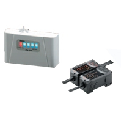

A high-performance fan for external air suction enables constant measuring over long periods. Semiconductor lasers and high-sensitivity optical design in the sensing section enable measurement of 0.3-μm particles.
Building Automation
Industrial Automation
Power Automation & Safety


Bangladesh Distributor
ZN-PD
Air Particle Sensor

Air Particle Sensor for In-line Measurement (Smallest in the Industry)
about this Product Family
Related Contents
- EQUO Environment Sensor
- Features
- Lineup
- Specifications
- Dimensions
- Application
- Catalog
last update: December 19, 2013
Particle Trend Indicator
The sensing section has a particle trend display for quick visual confirmation of the degree of cleanliness. The Amplifier provides numeric indication of the number of 0.3-, 0.5-, and 1.0-μm particles. A signal can be output at any level of particles if a threshold has been set.
On-screen Indication and Data Logging of Particle Amount
Measurement values can be easily logged on a personal computer by using the Interface Unit and special software (sold separately). Data from sequential sensing of particles can be used to improve quality.
Realtime Clean Air Monitor
A variety of displays (including color graphs for visual confirmation by color of particle densities, indication of the number of particles, and trend graphs) can be set. Particle Sensors and Interface Units can also be set from the personal computer. Measurement data is logged in realtime and can be manipulated in CSV-format files using spreadsheet software.
Quality Control with Multi-point Measurement (Patent Pending)
Up to ten Particle Sensors and up to nine Air Clean Units can be controlled through one Interface Unit and Real Time Clean Air Monitor. There are no time-consuming restrictions, such as the order that power is turned ON. The level of cleanliness can be controlled for each process and constant monitoring is possible in relation to quality data.
For In-line Applications
Installation is simple with DIN Track mounting. The In-line Air Particle Sensor was developed for in-line applications, with a 24-VDC power supply. External outputs can be at two levels: warnings and alarms. Suitable for in-line trend management applications.
last update: December 19, 2013